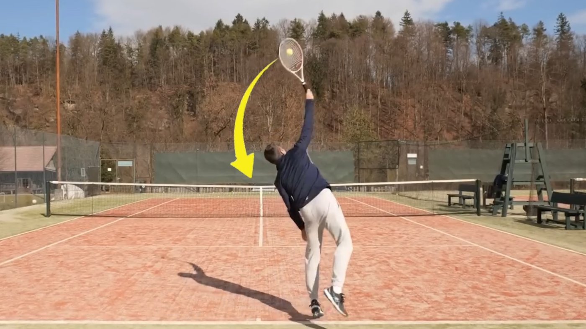
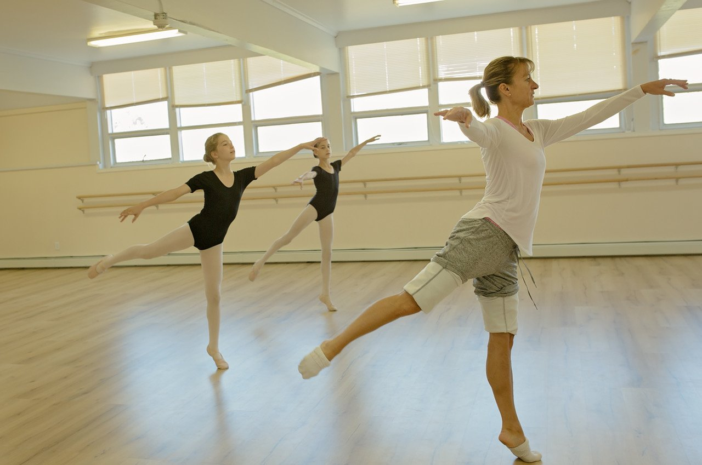
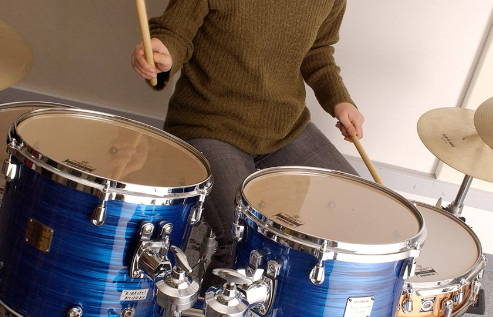
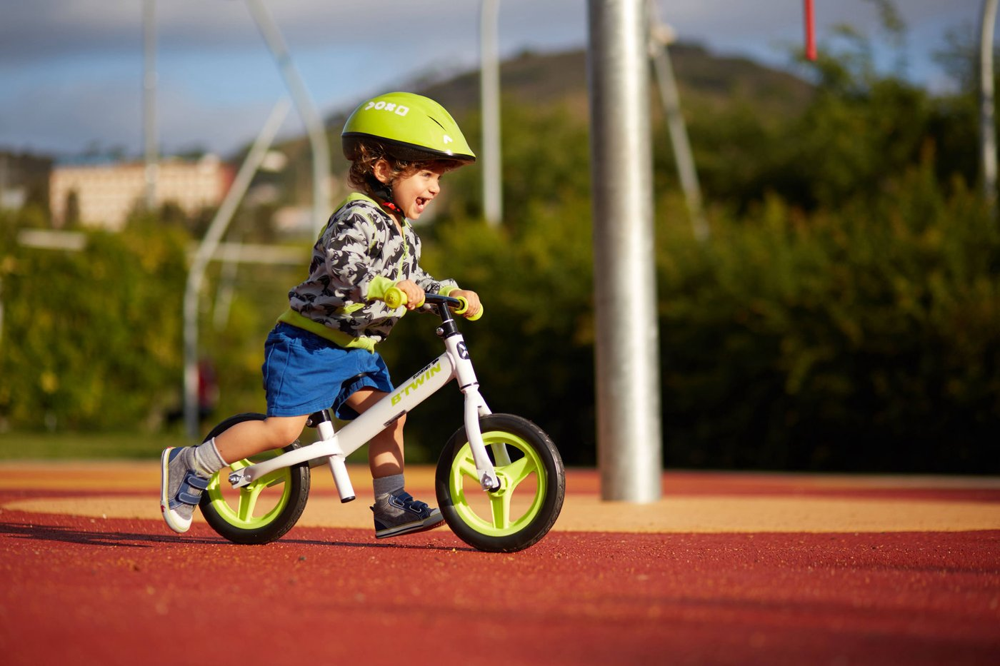
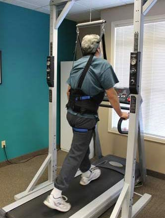
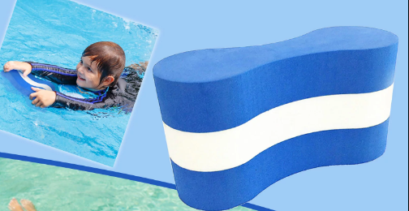
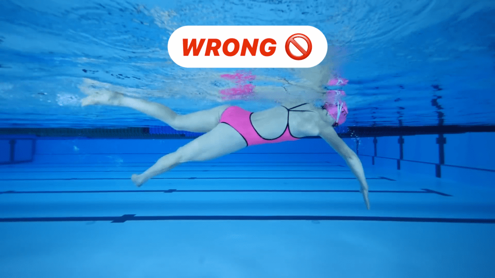
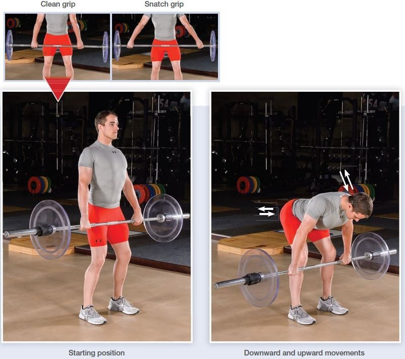

Whole vs. Part Practice
Do you teach a skill all at once, or break it into pieces? The answer depends on the skill itself.
By the end of this lesson you will be able to…
- 1Define whole and part practice.
- 2Use a skill’s complexity and organization to choose between them.
- 3Explain the main disadvantage of part practice.
- 4Apply three part-practice techniques: segmentation, simplification, and attention directing.
Whole or part practice?
Whole practice means practicing a skill in its entirety. Part practice means breaking it into components, practicing those separately, then combining them. The everyday question is simple to ask — and surprisingly tricky to answer:



A patient transfer, a musical instrument, a surgical procedure — every one forces the same choice: teach it whole, or break it into parts? So how do you decide?
Two characteristics of the skill
The classic framework (Naylor & Biggs, 1963) says the decision rests on two features of the skill itself:
How many parts?
The number of components a skill has — and how much attention it demands.
How interdependent?
How tightly the parts depend on one another in space and time.
Get these two straight, and the whole-vs-part decision mostly falls out on its own. Let’s take them one at a time.
Complexity = number of parts
Complexity is the number of components or parts a skill has. More complex skills have more parts and place more demand on information processing — especially for a beginner. Low-complexity skills have few parts and demand relatively little attention.
Think back to the knot-tying from your applied activity. Two knots, same general skill — but a different number of steps:
More steps → more components to hold in mind → higher complexity. That’s the whole idea.
These are not the same thing. A dart throw is low-complexity (few parts) but can still be difficult to do well. Complexity is about how many pieces there are — not how hard the skill is to master.
High or low complexity?
Classify each skill by its number of parts — not how hard it is. Answer all four to continue.
0 of 4 classified
Classify all four to continue.
Organization = how interdependent the parts are
Organization describes how tightly the component parts relate to one another in space and time.
Parts are interdependent
The timing of each element is crucial and depends on the others. Example: a basketball jump shot — legs, trunk, and arms must fire in one coordinated flow.
Parts are independent
Components can be performed relatively separately. Example: buttoning a shirt, or many dance routines — discrete steps strung together.
If the parts are highly interdependent, breaking them apart destroys the very thing that makes the skill work — the timing between them. If the parts are independent, you can safely practice them one at a time.
The whole-vs-part decision grid
Cross complexity with organization and the recommendation appears. Select each cell to reveal what to do — and why.
(parts independent)
(parts interdependent)
(few parts)
(many parts)
Reveal all four cells to continue.
A quick call
Someone is learning to play a melody with both hands on the piano — the two hands do different things (more parts to manage), and the notes must flow together in tight time, each hand depending on the other. That’s edging toward high complexity and high organization. Based on the grid, what’s the best approach?
Make a choice to continue.
Sometimes part practice is unavoidable
Whole practice preserves the connection — but sometimes a skill is simply too difficult for a learner to attempt as one entire sequence. A beginner can’t safely perform the whole thing at once.
For some skills and some learners, part practice isn’t just an option — it’s inevitable.
So the real question becomes: when you must break a skill down, how do you do it well? The techniques ahead show how — and what happens when the connection between parts is lost.
Skills that need both limbs at once
Many motor skills require moving your arms or legs (or both) simultaneously to hit a spatial and temporal goal — think drumming, swimming, or a bimanual patient-handling task.
Both part and whole practice can work for these (Walter & Swinnen, 1994). If you go the part route for an asymmetric two-handed skill, there’s a specific strategy for it:
For an asymmetric bimanual skill (the two hands doing different things), practice each hand or arm individually first — then combine them into the full two-handed movement.
Segmentation (progressive part method)
Begin with the first part of the skill, then progressively add each next part, until the whole skill is practiced together.
Because each part is added onto the previous ones, segmentation preserves the connections that pure part practice destroys. Good for a dance sequence, a surgical procedure, or a multi-step transfer.
Simplification
Practice an easier variation of the whole skill before attempting the real thing. The skill stays whole — you just reduce its difficulty at first. Classic clinical and everyday examples:



Each keeps the whole skill intact while removing one source of difficulty — balance, body weight, or buoyancy — so the learner can rehearse the real coordination safely.
The big disadvantage of part practice
When you practice parts separately and then put them together, performance can break down — because the learner never practiced the connection between the components.

Imagine practicing the leg kick and the arm stroke of swimming separately, then swimming for real. The timing of the natural sequence between upper and lower body is off — because the learner never practiced how the parts connect. For highly-organized skills, the connection is the skill.
Attention directing
So how do you get the focus of part practice without breaking that connection? This is the elegant answer. The learner performs the whole skill physically, but you direct their attention to one component at a time. They practice the whole movement while cognitively focusing on a part — so the connection is never lost.

Example: coaching a deadlift
The lifter performs the entire lift, but you cue one element per rep: “big chest,” then “hinge at the hips,” then “feel the hamstring stretch,” then “neutral spine.” Whole movement, one focus at a time.
Deadlift technique illustration via NSCA. This is “part practice” done entirely in the mind — the body never stops doing the whole skill.
A PT is teaching a complex, multi-step transfer where the steps are fairly independent of one another, but there are many of them and the whole sequence overwhelms the patient. What’s the most appropriate approach?
Answer to continue.
What you can now do
- 1Define whole vs. part practice.
- 2Use complexity (number of parts) and organization (how interdependent) to decide between them.
- 3Explain part practice’s main disadvantage — losing the connection between components.
- 4Apply segmentation, simplification, and attention directing when part practice is needed.
Across three lessons you’ve covered how to space practice (distribution), how to vary it (variability and contextual interference), and how to break it down (whole vs. part). Together they’re the toolkit for organizing any practice session.
Return to Canvas for this week’s homework and quiz.